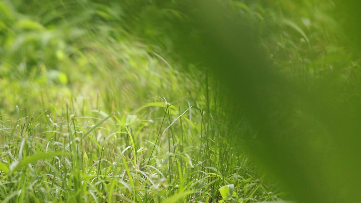
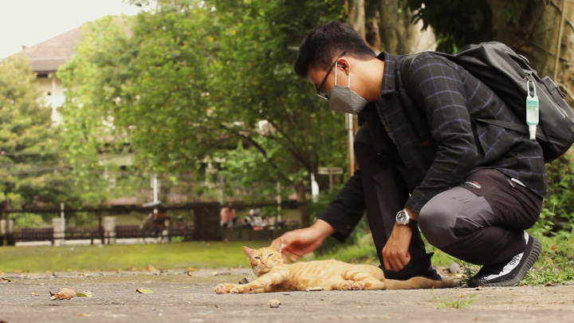
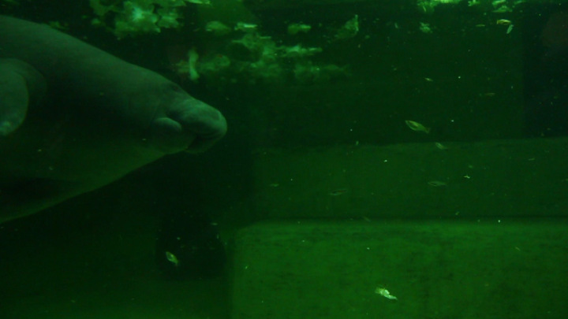
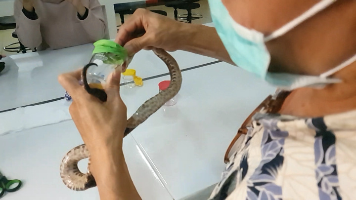
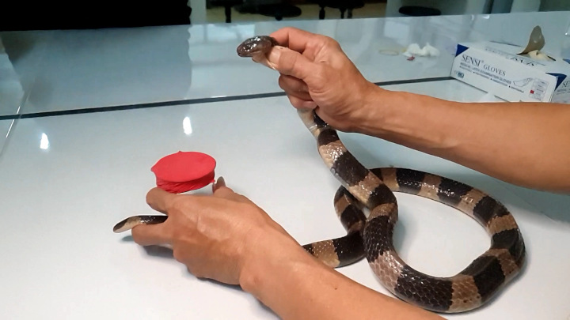

Mimi Was
Mimi Was refers to our cat, Mimi, who died in 2016 in the midst of a deadly panleukopenia outbreak. This was my first experience with this virus, and I was not prepared for its outcomes. The outbreak swept through Yogyakarta, at a time when pet care was less robust and accessible, and as it started when one of our cats disappeared and then returned in a state of near-death. Read more
Watch on YouTube
Watch or download from the Internet Archive
featured videos:


stats:
76 total items 19:19:31 hours (19:46:27 incl. raw)
download recent items:

Close-up of Grass
00:57 (00:55 raw)
1080
Download

Microsorum scolopendria at Night
01:40 (03:43 raw)
1080
Download

Ani and MIPA Cat
00:50 (00:47 raw)
1080
Download

Andra and Kunkun
01:04 (00:59 raw)
1080
Download

Indonesian Short-nosed Fruit Bat (Cynopterus titthaecheilus) Eats a Banana
00:45 (01:03 raw)
1440
Download

Looking Down at Jalan Teknika Selatan
00:36
1080
Download
Making the Cats of the Faculty of Biology
1:15:28
2160
Download
The Cats of the Faculty of Biology
20:30
1080
Download

Looking Over a Cliff in the Dieng Mountains
02:03 (02:04 raw)
1080
Download

Milking Juvenile Malayan Pit Viper (Calloselasma rhodostoma) Venom, in Slow Motion
17:55 (18:10 raw)
1080
Download

Manatee Tank in Tierpark Berlin
01:28 (01:26)
1080
Download

Milking Adult Malayan Pit Viper (Calloselasma rhodostoma) Venom, in Slow Motion
10:00 (09:54 raw)
1080
Download

Milking Banded Krait (Bungarus fasciatus) Venom, in Slow Motion
08:17 (08:16 raw)
1080
Download
Mother Cat Feeds Newborn Kittens
05:51 (06:28 raw)
1080
Download

Yellow Rose through a Macro Lens, One
00:46 (00:45 raw)
1080
Download
Sneak Peek: Understanding Plagiarism
01:00
1080
Download
Watching the Fish in Masjid Gedhe Mataram while Children Practise Gamelan
02:19 (02:36 raw)
1080
Download
Where the Banteng Roam
03:19
1080
Download
A Rooster of Candi Sari, in Monochrome
00:30
1080
Download

Pom Poko Presentations 2022
07:32
1080
Download
Self-portrait and a Dead Tree
00:19
1080
Download

Mount Merapi Landscape
01:01
1080
Download

Orange Sunset, Two
00:16
1080
Download